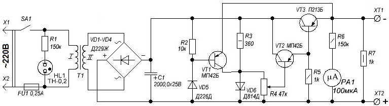

Регулируемый источник питания
(12 В, 0,5 А)
Выходное напряжение этого блока плавно изменяется от 0,5 до 12 В. Причем оно будет оставаться стабильным и при изменении напряжения сети и тока нагрузки. Схема имеет защиту от короткого замыкания в цепи нагрузки.

Рис. 1 - Схема регулируемого источника питания
В качестве трансформатора можно использовать трансформатор ТВК-110ЛМ из телевизоров. На выходе трансформатора должно получится напряжение 13-17 В и током до 0,5 А. После трансформатора идет выпрямительный мост на диодах Д229. Можно использовать готовую диодную сборку КЦ405, для упрощения конструкции. На выходе диодного моста установлен полярный конденсатор с большой емкостью, для снижения пульсаций выпрямленного напряжения.
Для стабилизации выходного напряжения, применяется параметрический стабилизатор, который состоит из стабилитрона Д814Д (подойдет любой с напряжением стабилизации около 13 В) и балластного резистора. Параллельно стабилитрону включен переменный резистор, с помощью которого мы и регулируем напряжение в цепи.
Далее идет усилительный каскад, состоящий из транзисторов VT2 и VT3. В качестве второго транзистора используется МП39Б, МП41, МП41А, МП42Б или КТ209. Третий транзистор - большой мощности (П213, П216-217), поэтому его надо установить на теплоотвод. Для этого можно использовать лист алюминия толщиной 3 мм. Перед креплением транзистора необходимо зачистить мелкой шкуркой поверхность листа, с которой он будет соприкасаться, и нанести термопасту.
Резистор R7 служит нагрузкой блока питания в то время, когда к выходным клеммам ничего не подключено. Защита от КЗ осуществляется с помощью транзистора VT1. Вместо него можно ставить транзисторы, перечисленные в списке замен VT2.
Для удобства контроля выходного напряжения служит вольтметр. Можно использовать индикатор уровня сигнала (микроамперметр) и добавочный резистор. Для его расчета нужно подать на микроамперметр напряжение 12 В через переменный резистор 100 кОм (можно меньше). Уменьшая сопротивление резистора добиться, чтобы стрелка микроамперметра установилась в крайнем правом положении. Затем измерить сопротивление переменного резистора и установить ближайший по номиналу постоянный резистор.
В качестве индикации работы блока питания служит неоновая лампа. Можно поставить светодиод с резистором
Наружу корпуса нужно вывести два зажима к которым прикреплены провода с клеммами.